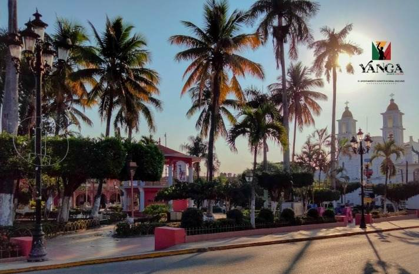

Descubriendo Yanga
En el corazón de Veracruz se encuentra Yanga, una ciudad con un pasado único que marcó la historia de México y América. Nombrada en honor a Gaspar Yanga, líder afrodescendiente que encabezó una rebelión de esclavos en el siglo XVII, este lugar se convirtió en el primer pueblo libre de América. Hoy, Yanga es un destino que combina historia, cultura y naturaleza, ofreciendo a sus visitantes una experiencia enriquecedora.
Entre sus principales atractivos destaca el Parque Central, un punto de reunión lleno de vida donde se puede disfrutar del ambiente local. También se encuentra la Parroquia San Lorenzo Mártir, una joya arquitectónica con una historia que data de la época colonial. Para los amantes de la historia, el Museo Palmillas es una parada obligatoria, con exhibiciones que narran la lucha por la libertad y la evolución de la región.
Si buscas una conexión con la historia prehispánica, la Pirámide Palmillas es un sitio arqueológico fascinante, aún en exploración, que sugiere la presencia de civilizaciones antiguas en la zona. Además, el Estadio de Béisbol es un lugar ideal para experimentar la pasión deportiva que caracteriza a Veracruz.
Cada rincón de Yanga cuenta una historia de lucha, libertad y tradición. Visitar este destino es viajar en el tiempo y descubrir la esencia de un pueblo que ha sabido preservar su legado con orgullo.
Rutas y Consejos
Si estás planeando una visita a Yanga, es recomendable organizar tu recorrido para aprovechar al máximo tu tiempo y conocer sus principales atractivos. Aquí te compartimos algunas rutas sugeridas y consejos útiles:
Ruta histórica
- Museo Palmillas. Inicia tu recorrido en este espacio cultural donde conocerás la historia de Gaspar Yanga, su lucha por la libertad y el proceso de independencia de la región. También encontrarás piezas arqueológicas y documentos históricos.
- Parroquia San Lorenzo Mártir. A unos minutos del museo, esta iglesia colonial te sorprenderá con su arquitectura y su legado religioso.
- Pirámide Palmillas. Finaliza el recorrido en este enigmático sitio arqueológico, donde podrás imaginar cómo vivían las antiguas civilizaciones que habitaron la región.
Ruta cultural y recreativa
- Parque Central. Un excelente punto de partida para disfrutar del aire libre, observar la vida cotidiana de los habitantes y conocer monumentos representativos de la ciudad.
- Mercados y restaurantes locales. Aprovecha para probar platillos típicos veracruzanos, como los tamales, el zacahuil o los mariscos frescos.
- Estadio de Béisbol. Si tienes la oportunidad, asiste a un partido y vive la emoción de este deporte tan arraigado en la región.
Consejos para tu visita
- Clima y vestimenta:. anga tiene un clima cálido la mayor parte del año, por lo que es recomendable usar ropa ligera, calzado cómodo y protector solar.
- Transporte:. Si viajas en auto, revisa las rutas y opciones de estacionamiento en Google Maps. Si prefieres el transporte público, hay diversas opciones desde Córdoba y Orizaba. .
- Seguridad:. Yanga es un destino tranquilo, pero siempre es recomendable estar atento a tus pertenencias y seguir las indicaciones de los locales.